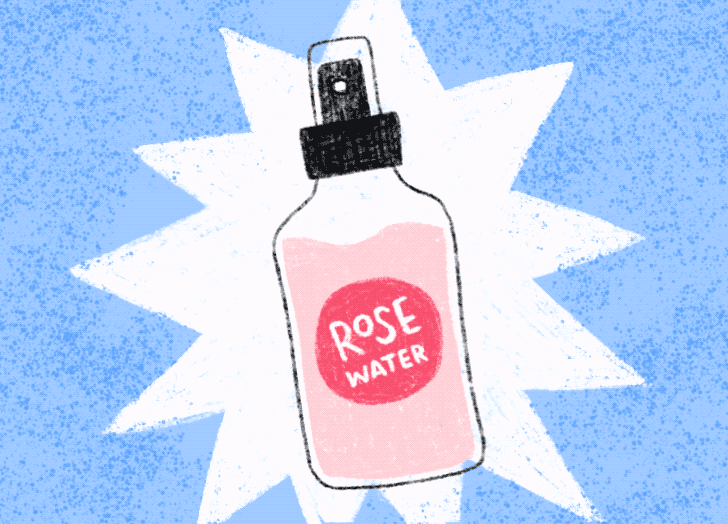

Here are some products and lifestyle changes that you can implement as part of your beauty and skincare routine. The best part? You probably already have everything you need in your pantry, kitchen, or medicine cabinet.
1. Soothe skin with virgin coconut oil
Coconut oil has anti-inflammatory, antioxidant, and healing properties. You can use coconut oil to:
- take off makeup
- soothe your skin barrier
- promote dewy-looking skin that’s healthy below the surface layer
2. Use aloe vera to keep skin strong and healthy
Aloe vera has healing properties and may stimulate new cell growth. It also soothes and moisturizes without clogging pores. Using aloe vera after you’ve washed your face each day may give your skin that healthy glow.
3. Moisturize properly after washing your face
Another important step in the skin care routine is the application of a moisturiser. One should preferably use essential oils like tea tree and jojoba oil, which aid in masking imperfections and improve the texture of the skin.
Tip: Tea tree oil should be used with a carrier oil and should never be applied directly on the face.
4. Rose water is the basic
Rose essential oil or rose water is one of the best toners out there, which is suitable for all skin types. Store it in a spray bottle and use it twice a day. It would help to soothe and calm the skin, balance ph levels, and help repair the skin's elasticity.
5. Milk plus honey is magical
Honey and milk can do wonders in bringing out a flawless glow which every woman craves for. Milk helps in preventing acne and moisturizes the skin well. People with sensitive skin can use face washes that contain no chemicals or paraben